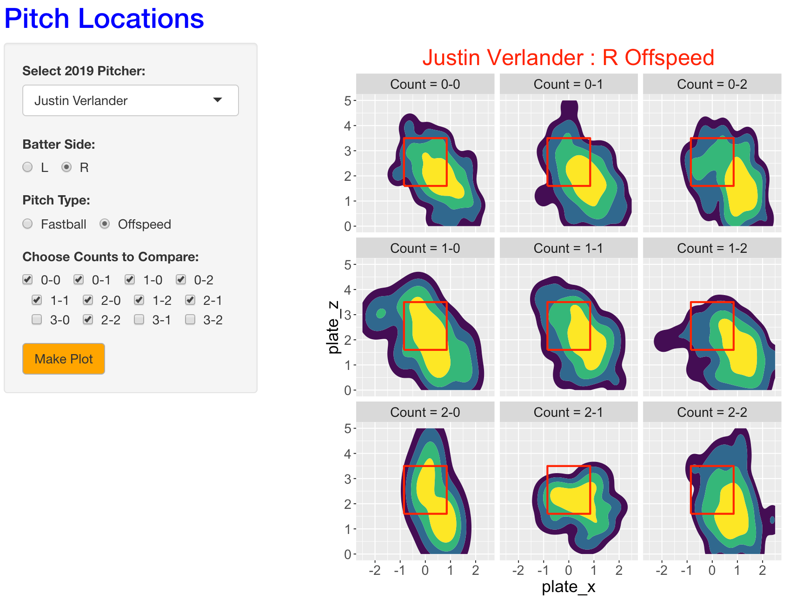

20 PitchLocation
20.1 Introduction
This app displays pitch locations over the zone for a group of 2019 pitchers for a selected pitch type, batter side, and counts.
20.2 Using the PitchLocation App

One selects from the dropdown menu a 2019 pitcher of interest. Using the button, one selects a batter side (either right or left), a type of pitch (either fastball or offspeed), and particular counts to compare.
In this example, we select Justin Verlander and we are interested in seeing the pitch locations of his fastballs to right-handed hitters on all 0, 1, and 2 strike counts.
When one presses the MAKE PLOT button, one sees highest density regions of pitch locations for each of the nine counts. The yellow region corresponds to the region that contains 50 percent of the pitch locations. What we see is that Verlander’s fastballs tend to fall in the middle of the zone, but he clearly throws them at a higher location on two-strike counts.
To get alternative graphs, make button selections and press the MAKE PLOT button.
By selecting off-speed and pressing MAKE PLOT, we see the pitch locations for Verlander’s off-speed pitches on the same counts to right-handed hitters.

We see a tendency for Verlander to throw his off-speed pitches low and outside. In addition, the locations tend to lower and more outside on two-strike counts.